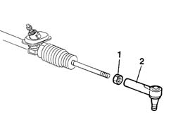

4130A16 POWER STEERING LINK - R R
- Path
- Procedures > 41 STEERING UNIT > 4130 POWER STEERING > 4130A POWER STEERING BOX > 4130A16 POWER STEERING LINK - R R
- Kind
- repair procedure (removal / refitting; the operation number is the code)
- Applies to
- all engines; all production periods
- Interactive page
- https://sloeber94.github.io/elrnDB-fDct/en/#/244001167
Applies to: all engines; all production periods
 Removing
Removing
 Refitting
Refitting- Measure the length of the steering rods to be used in the refitting.
1. Loosen the nuts fastening the steering rods.
2. Undo the rods from the steering box and remove them.

Applies to: all engines; all production periods
Refitting
Removing- Tighten the steering rods on the steering box.
- Check that the length of the adjustable steering rods is the same as measured during the removal.
- Tighten the steering rod nuts to the recommended torque.